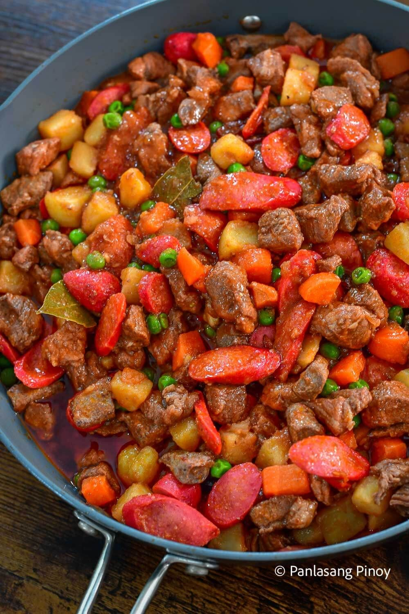

Menudo
Ingredients
- 500g pork, cubed
- 100g liver, cubed
- 2 potatoes, diced
- 2 carrots, diced
- 1/2 cup tomato sauce
- 1 onion, chopped
- 3 cloves garlic, minced
- 1 cup water
Steps
- Sauté garlic and onion. Add pork and cook until browned.
- Add tomato sauce and water. Simmer for 20 mins.
- Add potatoes, carrots, and liver.
- Cook until vegetables are soft and sauce thickens.
- Season with salt and pepper. Serve with rice.